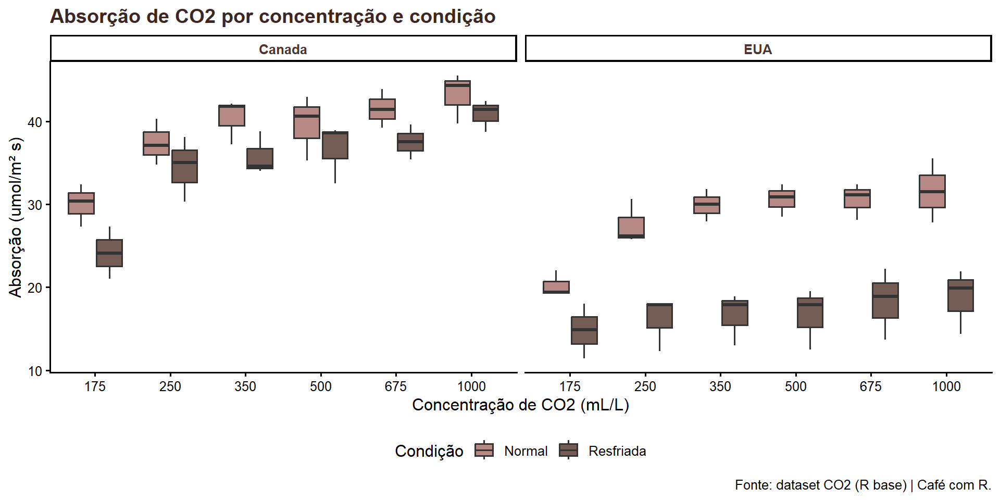

Rows: 84
Columns: 5
$ Plant <ord> Qn1, Qn1, Qn1, Qn1, Qn1, Qn1, Qn1, Qn2, Qn2, Qn2, Qn2, Qn2, …
$ Type <fct> Quebec, Quebec, Quebec, Quebec, Quebec, Quebec, Quebec, Queb…
$ Treatment <fct> nonchilled, nonchilled, nonchilled, nonchilled, nonchilled, …
$ conc <dbl> 95, 175, 250, 350, 500, 675, 1000, 95, 175, 250, 350, 500, 6…
$ uptake <dbl> 16.0, 30.4, 34.8, 37.2, 35.3, 39.2, 39.7, 13.6, 27.3, 37.1, …Aula 12. Atualizações no pacote dplyr
Novas funções 1.2.0
Democratização
Use, compartilhe, a aula está no github dentro do meu site.

Aproveitem muito!!! Ahhh essa é a meguy, minha gatinha linda, ela está na logo do café com R!
Códigos dos slides
Todos os códigos da aula estão funcionais. Prontos para reproduzir.
Adicionei o código dos slides em gist (no GitHub) para facilitar a prática.
Link do gist: https://gist.github.com/jenniferlopes/
Objetivos da apresentação
- Conhecer as funções novas do dplyr 1.2.0
- Entender o que mudou em relação à versão 1.1.0
- Aplicar cada função com exemplos do dataset CO2
- Substituir padrões antigos por código mais limpo
- Ganhar confiança para usar o dplyr no dia a dia
Pacote dplyr

O que é o dplyr?
dplyré um dos principais pacotes do ecossistema tidyverse para manipulação de dados em R.Ele foi projetado para tornar operações em tabelas mais legíveis, rápidas e consistentes.
select()seleciona colunas |filter()filtra linhasmutate()cria ou transforma variáveis |summarise()agrega resultadosarrange()ordena dados |group_by()define agrupamentos
Uso do pacote para:
Sintaxe clara e encadeável com
|>Alta performance em grandes bases
Integração direta com bancos via
dbplyrCódigo mais declarativo e menos propenso a erro
O que mudou no dplyr 1.2.0?
A versão 1.2.0 trouxe dois conjuntos principais de novidades:
Família filter()
filter_out()- remover linhaswhen_any()- condições com|when_all()- todas as condições
Família de recodificação
recode_values()- novo padrãoreplace_values()- atualização parcialreplace_when()- substituição condicional
O que mudou no dplyr 1.2.0?
Warning
case_match() foi soft-depreciado no 1.2.0. O substituto oficial é recode_values().
O dataset CO2
O que é o CO2?
O dataset CO2 está disponível nativamente no R. Contém dados de um experimento sobre absorção de CO2 por plantas de capim.
- Plant: identificador da planta (Qn1 a Mn3 - 12 plantas)
- Type: origem da planta - Quebec ou Mississippi
- Treatment: condição - chilled (frio) ou nonchilled
- conc: concentração de CO2 no ambiente (mL/L)
- uptake: taxa de absorção de CO2 (umol/m² s)
Carregando e conhecendo os dados
Resumo inicial
dados |>
group_by(Type, Treatment) |>
summarise(
n = n(),
uptake_medio = round(mean(uptake), 2),
uptake_max = max(uptake),
.groups = "drop")# A tibble: 4 × 5
Type Treatment n uptake_medio uptake_max
<fct> <fct> <int> <dbl> <dbl>
1 Quebec nonchilled 21 35.3 45.5
2 Quebec chilled 21 31.8 42.4
3 Mississippi nonchilled 21 26.0 35.5
4 Mississippi chilled 21 15.8 22.2Função 1 - filter_out()
O problema com filter() para remover linhas
filter() foi projetado para manter linhas. Quando queremos remover, a lógica se inverte e os NAs se tornam um problema.
Função 1 - filter_out()
Note
Quando há NA, filter(!(condição)) remove as linhas com NA também - comportamento inesperado e silencioso.
filter_out() - a solução
filter_out() foi criado para remover linhas com a mesma naturalidade que filter() mantém linhas. Com NA, ele trabalha a seu favor: não remove o que não sabe.
filter_out() - comparando com filter()
# Removendo plantas com tratamento chilled E uptake baixo
dados |>
filter_out(
Treatment == "chilled",
uptake < 25) |>
count(Treatment)# A tibble: 2 × 2
Treatment n
<fct> <int>
1 nonchilled 42
2 chilled 16Dica
Com filter_out(), condições separadas por vírgula são combinadas com & - assim como no filter(). Se qualquer condição for NA, a linha não é removida.
Função 2 - when_any() e when_all()
O problema de combinar condições com OR
filter() combina condições com & (E). Para usar | (OU), o código fica verboso e difícil de ler.
when_any() - condições combinadas com OR
when_any() aceita condições separadas por vírgula e as combina com |. O código fica muito mais legível.
when_all() - todas as condições devem ser TRUE
when_all() retorna TRUE somente quando todas as condições são satisfeitas ao mesmo tempo.
# Plantas onde uptake é alto E conc é alta E tratamento é nonchilled
dados |>
filter(when_all(
uptake > 35,
conc > 500,
Treatment == "nonchilled")) |>
select(Plant, Type, Treatment, conc, uptake)# A tibble: 7 × 5
Plant Type Treatment conc uptake
<ord> <fct> <fct> <dbl> <dbl>
1 Qn1 Quebec nonchilled 675 39.2
2 Qn1 Quebec nonchilled 1000 39.7
3 Qn2 Quebec nonchilled 675 41.4
4 Qn2 Quebec nonchilled 1000 44.3
5 Qn3 Quebec nonchilled 675 43.9
6 Qn3 Quebec nonchilled 1000 45.5
7 Mn1 Mississippi nonchilled 1000 35.5when_any() fora do filter()
when_any() e when_all() são funções vetoriais - funcionam em qualquer contexto, não apenas no filter().
Função 3 - recode_values()
O problema com case_when() para recodificar
case_when() repete a variável em cada linha quando você está apenas mapeando valores.
recode_values() - o novo padrão
recode_values() recebe a variável uma vez e mapeia os valores diretamente. Mais limpo, mais legível.
recode_values() - com lookup table
Uma das novidades mais importantes: suporte direto a tabelas de mapeamento via from e to.
lookup <- tibble::tribble(
~de, ~para,
"Quebec", "Canada",
"Mississippi", "Estados Unidos",
"chilled", "Resfriado",
"nonchilled", "Temperatura normal")
dados |>
mutate(
origem = recode_values(Type,
from = lookup$de[1:2],
to = lookup$para[1:2]),
condicao = recode_values(Treatment,
from = lookup$de[3:4],
to = lookup$para[3:4])) |>
distinct(Type, Treatment, origem, condicao)# A tibble: 4 × 4
Type Treatment origem condicao
<fct> <fct> <chr> <chr>
1 Quebec nonchilled Canada Temperatura normal
2 Quebec chilled Canada Resfriado
3 Mississippi nonchilled Estados Unidos Temperatura normal
4 Mississippi chilled Estados Unidos Resfriado recode_values() - unmatched = “error”
Para programação defensiva: erro imediato se algum valor não for mapeado.
# Exemplo com valor não previsto no mapeamento
dados_teste <- dados |>
mutate(Type = if_else(
row_number() == 1, "Desconhecido", as.character(Type)))
tryCatch(
dados_teste |>
mutate(
origem = recode_values(Type,
"Quebec" ~ "Canada",
"Mississippi" ~ "Estados Unidos",
unmatched = "error")),
error = function(e) conditionMessage(e))[1] "ℹ In argument: `origem = recode_values(...)`.\nCaused by error in `recode_values()`:\n! Each location must be matched.\n✖ Location 1 is unmatched."Função 4 - replace_values()
Quando usar replace_values()
replace_values() é para atualização parcial de uma coluna existente - quando você quer alterar apenas alguns valores, mantendo o restante intacto.
recode_values()cria uma coluna nova (pode ter tipo diferente)replace_values()atualiza a coluna no lugar (tipo sempre igual)- É type-stable: a saída tem sempre o mesmo tipo que a entrada
- Pipe-friendly: o primeiro argumento é a variável sendo atualizada
replace_values() - padronizando nomes
# Simulando nomes inconsistentes de plantas
dados_teste <- dados |>
mutate(Plant = as.character(Plant)) |>
mutate(Plant = if_else(Plant == "Qn1", "QN1", Plant))
dados_teste |>
mutate(
Plant = Plant |>
replace_values("QN1" ~ "Qn1")) |>
distinct(Plant) |>
head(5)# A tibble: 5 × 1
Plant
<chr>
1 Qn1
2 Qn2
3 Qn3
4 Qc1
5 Qc2 replace_values() - substituindo NAs
replace_values() cobre casos que antes exigiam coalesce(), na_if() ou replace_na().
replace_values() - múltiplas substituições
# Padronizando múltiplos valores problemáticos de uma só vez
dados |>
mutate(
Type_limpo = as.character(Type) |>
replace_values(
c("Quebec", "QUEBEC") ~ "Quebec",
c("Mississippi", "MISS") ~ "Mississippi")) |>
distinct(Type, Type_limpo)# A tibble: 2 × 2
Type Type_limpo
<fct> <chr>
1 Quebec Quebec
2 Mississippi MississippiFunção 5 - replace_when()
O que é replace_when()
replace_when() é o complemento de case_when() para substituições parciais. Enquanto case_when() recria a coluna inteira, replace_when() altera apenas as linhas que satisfazem a condição.
case_when()→ recria a coluna do zero (recodificação)replace_when()→ atualiza apenas as linhas afetadas (substituição)- Mais seguro: linhas não cobertas pela condição ficam intactas
- Pipe-friendly e type-stable
replace_when() - ajuste condicional de valores
# Corrigindo uptake de plantas resfriadas que parecem outliers
dados |>
mutate(
uptake_ajustado = uptake |>
replace_when(
Treatment == "chilled" & uptake > 40 ~ uptake * 0.95,
Treatment == "chilled" & uptake < 10 ~ uptake * 1.10)) |>
filter(Treatment == "chilled") |>
select(Plant, Treatment, uptake, uptake_ajustado) |>
head(8)# A tibble: 8 × 4
Plant Treatment uptake uptake_ajustado
<ord> <fct> <dbl> <dbl>
1 Qc1 chilled 14.2 14.2
2 Qc1 chilled 24.1 24.1
3 Qc1 chilled 30.3 30.3
4 Qc1 chilled 34.6 34.6
5 Qc1 chilled 32.5 32.5
6 Qc1 chilled 35.4 35.4
7 Qc1 chilled 38.7 38.7
8 Qc2 chilled 9.3 10.2replace_when() x case_when()
# Comparando: case_when() exige .default para manter os demais valores
dados |>
mutate(
# Com case_when() - precisa de .default = uptake
uptake_cw = case_when(
uptake > 40 ~ uptake * 0.9,
.default = uptake),
# Com replace_when() - o .default é automático
uptake_rw = uptake |>
replace_when(uptake > 40 ~ uptake * 0.9)) |>
filter(uptake > 40) |>
select(Plant, uptake, uptake_cw, uptake_rw) |>
head(5)# A tibble: 5 × 4
Plant uptake uptake_cw uptake_rw
<ord> <dbl> <dbl> <dbl>
1 Qn2 41.8 37.6 37.6
2 Qn2 40.6 36.5 36.5
3 Qn2 41.4 37.3 37.3
4 Qn2 44.3 39.9 39.9
5 Qn3 40.3 36.3 36.3Comparativo - antigo x novo
O que mudou na família filter()
| Antes | dplyr 1.2.0 |
|---|---|
filter(!(condição)) |
filter_out(condição) |
filter(cond1 \| cond2) |
filter(when_any(cond1, cond2)) |
filter(cond1 & cond2) |
filter(when_all(cond1, cond2)) |
O que mudou na família de recodificação
| Antes | dplyr 1.2.0 | Para que serve |
|---|---|---|
case_when() com == |
recode_values() |
Recodificar por valores |
case_when() + .default = x |
replace_when() |
Substituição condicional |
coalesce() / na_if() |
replace_values() |
Substituição parcial |
case_match() |
recode_values() |
Soft-depreciado em 1.2.0 |
Aplicação completa
Análise encadeada com as novas funções
Usando filter_out(), recode_values(), replace_when() e when_any() juntos:
analise <- dados |>
# Remover concentrações muito baixas e plantas sem registro
filter_out(conc < 100) |>
# Recodificar origem com lookup
mutate(
origem = Type |>
recode_values(
"Quebec" ~ "Canada",
"Mississippi" ~ "EUA"),
condicao = Treatment |>
recode_values(
"chilled" ~ "Resfriada",
"nonchilled" ~ "Normal"))Análise encadeada - continuação
analise |>
# Ajustar uptake de plantas em condição extrema
mutate(
uptake_adj = uptake |>
replace_when(
condicao == "Resfriada" & uptake < 20 ~ uptake * 1.05)) |>
# Destacar observações notáveis
filter(when_any(
uptake_adj > 40,
conc == 1000 & condicao == "Resfriada")) |>
count(origem, condicao)# A tibble: 3 × 3
origem condicao n
<chr> <chr> <int>
1 Canada Normal 9
2 Canada Resfriada 3
3 EUA Resfriada 3Visualização - Absorção de CO2 por concentração e condição
grafico1 <- analise |>
ggplot(aes(
x = factor(conc),
y = uptake,
fill = condicao)) +
geom_boxplot(alpha = 0.85) +
scale_fill_manual(values = c(
"Resfriada" = "#5D4037",
"Normal" = "#A9746E")) +
facet_wrap(~origem) +
labs(
title = "Absorção de CO2 por concentração e condição",
x = "Concentração de CO2 (mL/L)",
y = "Absorção (umol/m² s)",
fill = "Condição",
caption = "Fonte: dataset CO2 (R base) | Café com R.") +
theme_classic(base_size = 12) +
theme(
plot.title = element_text(face = "bold", color = "#3E2723"),
strip.text = element_text(face = "bold", color = "#4E342E"),
legend.position = "bottom")Visualização - Absorção de CO2 por concentração e condição

Referências
Documentação
- dplyr 1.2.0 release notes: dplyr.tidyverse.org/news
- Blog Posit: tidyverse.org/blog
- dplyr cheat sheet: posit.co/resources/cheatsheets
Conclusão
Principais aprendizados
filter_out()resolve o problema clássico de remover linhas com NAs de forma segurawhen_any()ewhen_all()tornam condições com|legíveis e explícitasrecode_values()substituicase_match()ecase_when()para mapeamento de valoresreplace_values()cobrecoalesce(),na_if()ereplace_na()em uma só funçãoreplace_when()atualiza parcialmente colunas sem precisar de.default
O que continua válido da versão 1.1.0
.bypara agrupamento inline semungroup()reframe()para múltiplas linhas por grupopick()para selecionar colunas dentro de data-maskingif_any()eif_all()para filtros multi-colunaconsecutive_id()para identificar blocos sequenciaiscross_join()para produto cartesiano explícito
Próximos passos
- Instalar
dplyr 1.2.0cominstall.packages("dplyr") - Substituir
filter(!(cond))porfilter_out(cond)nos scripts existentes - Migrar
case_match()pararecode_values()- está soft-depreciado - Explorar
replace_values()como substituto decoalesce()ena_if() - Acompanhar o changelog em dplyr.tidyverse.org/news
Obrigada!

Imagem: Allison Horst.
Continue praticando e explorando!
Esta apresentação é parte do projeto Café com R! É OPEN, USE, COMPARTILHE!
Acompanhe o Café com R
Fique por dentro das aulas, conteúdos, newsletter!
Que cada gole desperte uma nova ideia.
Que cada script abra uma nova conversa.
Que o Café com R, se torne um ponto de encontro nosso!

Jennifer Lopes | Café com R